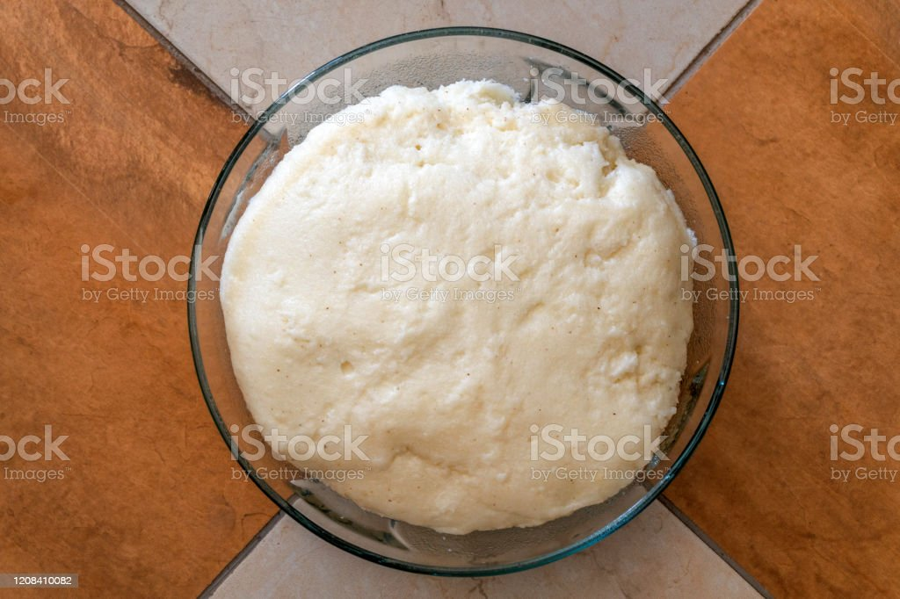

ugali

White Ugali
this is what most people do take nyama choma with if they are not
interested in taking the roasted potato
these are the ingredients
- 1kg of ugali flour
- 1/2 jug of water
- blueband
steps
- heat the water with blueband untill it boils
- add the floor to water in portions as you star untill it gets thick
- do that for about 7 minutes untill it forms a solid like
substance
- the ugali s ready as s to be placed on a clean plate to be served